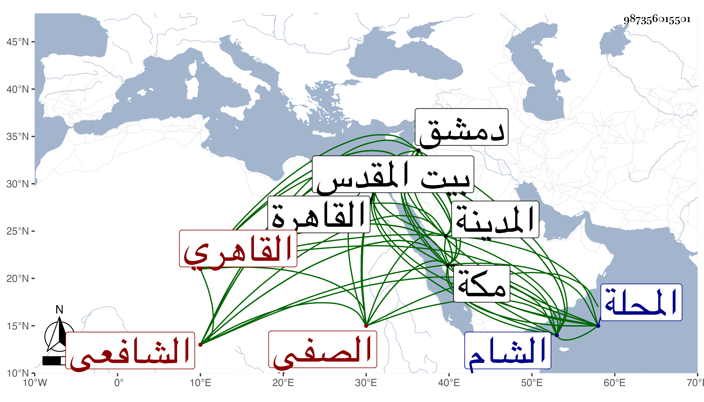

0902Sakhawi.DawLamic.ITO20230111-ara1.EIS1600.987356015501
Biography ID: 987356015501
291
محمد بن يوسف بن أحمد الشمس أبو الغيث المدعو قديما عبد القادر ابن الجمال أبي المحاسن الصفي ثم القاهري الشافعي الآتي أبوه ابن أخت الجمال البدراني وإخوته ويعرف بابن الشيخ يوسف الصفي . ولد سنة أربع وعشرين وثمانمائة سنة وفاة أبيه ونشأ فحفظ القرآن والعمدة والمنهاج الفرعي وعرض على غير واحد كشيخنا والمحب بن نصر الله وقرأ الفقه والفرائض على السيد النسابة والبوتيجي والفقه خاصة على العماد بن شرف والفرائض فقط مع النحو على أبي الجود وأصول الفقه على الجمال الأمشاطي وإمام الكاملية في آخرين كالحناوي والعز عبد السلام البغدادي والبرهان بن خضر وابن حسان وأبي حامد بن التلواني ومما قرأه عليه مقدمته في النحو التعبير ولازم شيخنا مدة وسمع عليه الكثير وكذا سمع على خلق بالقاهرة ومكة وبيت المقدس والشام وغيرها وأقام في كل من هذه الأماكن زمنا ، وممن سمع عليه بمكة أبو الفتح المراغي والتقي بن فهد وبالمدينة المحب المطري وببيت المقدس الجمال بن جماعة والتقي القلقشندي وكان معنا في السماع بدمشق وحضر فيها دروس غير واحد من علمائها كماهر في بيت المقدس وأكثر جدا ولم ينفك عن السماع بحيث سمع ممن هو دونه ، وسافر أيضا إلى المحلة وغيرها وأجاز له الكمال ابن خير وابن الجزري والبرماوي والواسطي وخلق وسمع من لفظ الكلوتاتي الثقفيات وكذا سمع على رقية الثعلبية المنازع في شأنها وحصل الأسانيد والتراجم والوفيات وضبط وقيد وكتب بخطه جملة وأفاد وألم بالطلب وشارك في الجملة مع مزيد الاستقامة والتواضع والتقنع باليسير والتعفف والتودد والانجماع عن الناس جملة والرغبة في لقاء الصالحين حتى صار واحدا منهم والمداومة على حضور سعيد السعداء الذي ليس له غيره وقد اعتنى بجمع مناقب أبيه فحصل منها جملة وهو ممن سمع الكثير بقراءتي بل لازمني في الإملاء وغيره وراجعني كثيرا وقرأ علي أشياء ولبس مني الخرقة على قاعدته غير مرة وكتب نبذة من تصانيفي واستفدت منه أيضا مع مبالغته في إجلالي وحدثني بعدة منامات رآها لي ولم يزل على حاله حتى مات في ذي الحجة سنة اثنتين وتسعين ودفن عند أبيه بحوش سعيد السعداء وكان له مشهد هائل ويقال أن تركته وجلها كتب بلغت نحو مائتي دينار رحمه الله وإيانا .
